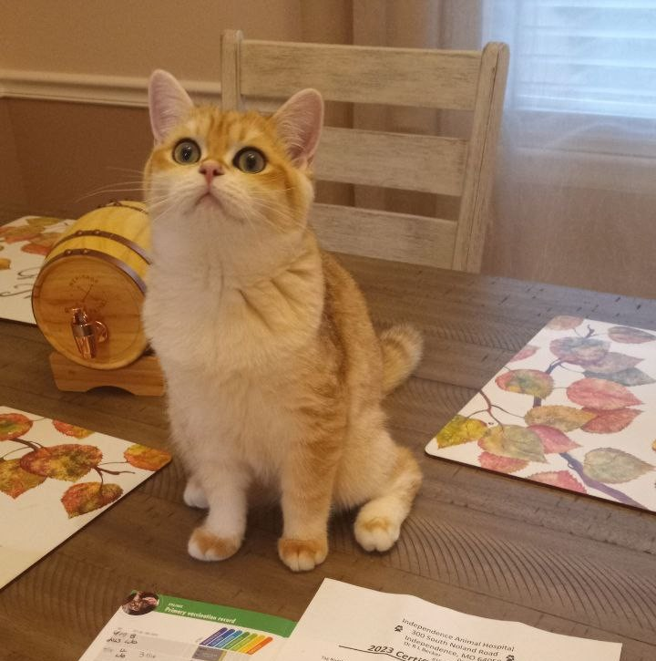
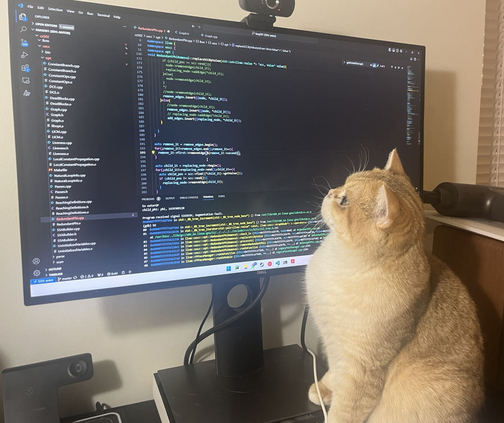

Biography
I am a Ph.D. candidate in Computer Science at Purdue University, advised by Dr. Changhee Jung. My research focuses on computer architecture, with an emphasis on low-power design for intermittent processors. My current work aims to improve the overall energy efficiency of CPU microarchitecture by reducing unnecessary energy waste in cache and memory. Additionally, I am exploring reliable and lightweight processors to address crash consistency issues arising from power interruptions.
Publications
-
[HPCA'26] Intermittence-Aware Cache Compression
Gan Fang, Jianping Zeng, Yuchen Zhou, and Changhee Jung
IEEE International High-Performance Computer Architecture, January 2026. -
[ISCA'25] Rethinking Prefetching for Intermittent Computing
[PDF]
Gan Fang, Jianping Zeng, Aditya Gupta, and Changhee Jung
ACM/IEEE International Symposium on Computer Architecture, June 2025.
Best Paper Honorable Mention -
[HPCA'25] Rethinking Dead Block Prediction for Intermittent Computing
[PDF]
Gan Fang and Changhee Jung
IEEE International Symposium on High-Performance Computer Architecture, March 2025. -
[ICCAD'24] Hybrid Power Failure Recovery for Intermittent Computing
[PDF]
Gan Fang, Jongouk Choi, and Changhee Jung
ACM/IEEE International Conference on Computer-Aided Design, October 2024.
Experience
- SoC Modeling Intern @ Samsung Research America (May 2025 – Aug 2025)
- HPC Library Engineer Intern @ Cambricon Technology (Mar 2021 – Jun 2021)
- Computer Architecture Intern @ Biren Technology (Jul 2020 – Dec 2020)
Mentees
- Sotirios Kougiouris — Graduate @ Purdue
- Chewon Yu Park — Undergraduate @ Purdue
- Zhanyue Zhang — Graduate @ UT Austin
- Khanh Nguyen — Undergraduate @ Purdue
- Dongho Choi — Undergraduate @ Seoul National University → PhD @ Seoul National University
- Aditya Gupta — Undergraduate @ Purdue → SDE @ Theom
- Sikang Sun — Undergraduate @ Purdue → PhD @ Purdue
Meow



Dax is originally from Kansas and became part of our family in the fall of 2023. He diligently helps me debug and polish papers at night!